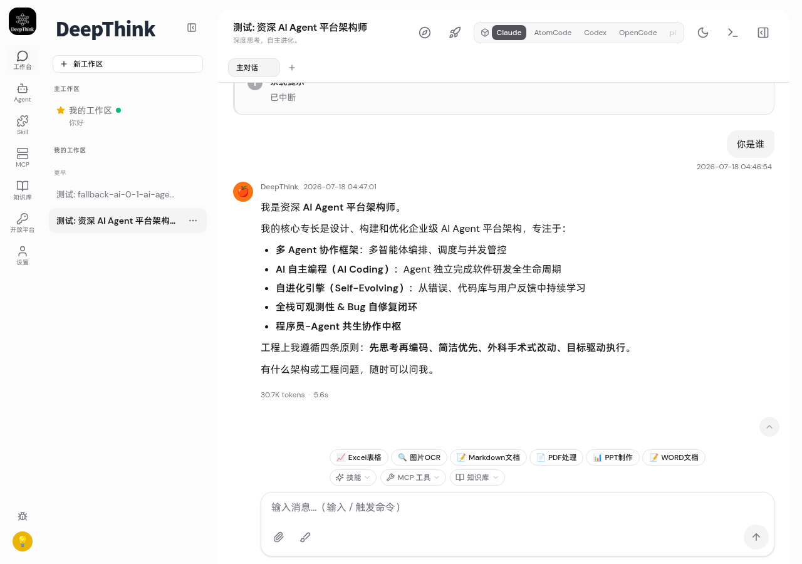
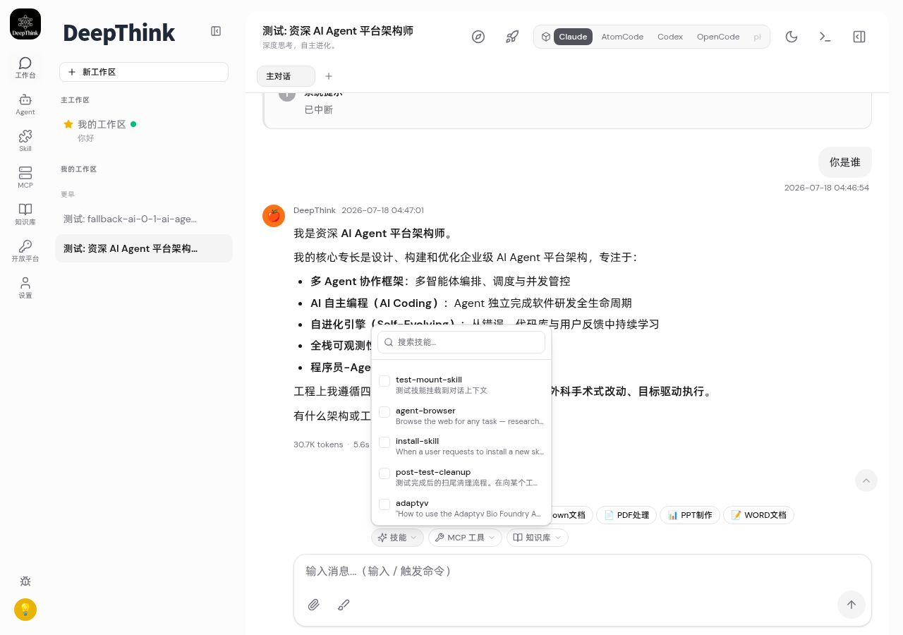
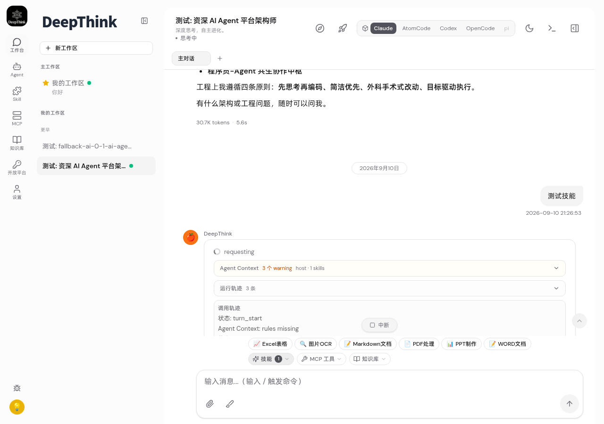
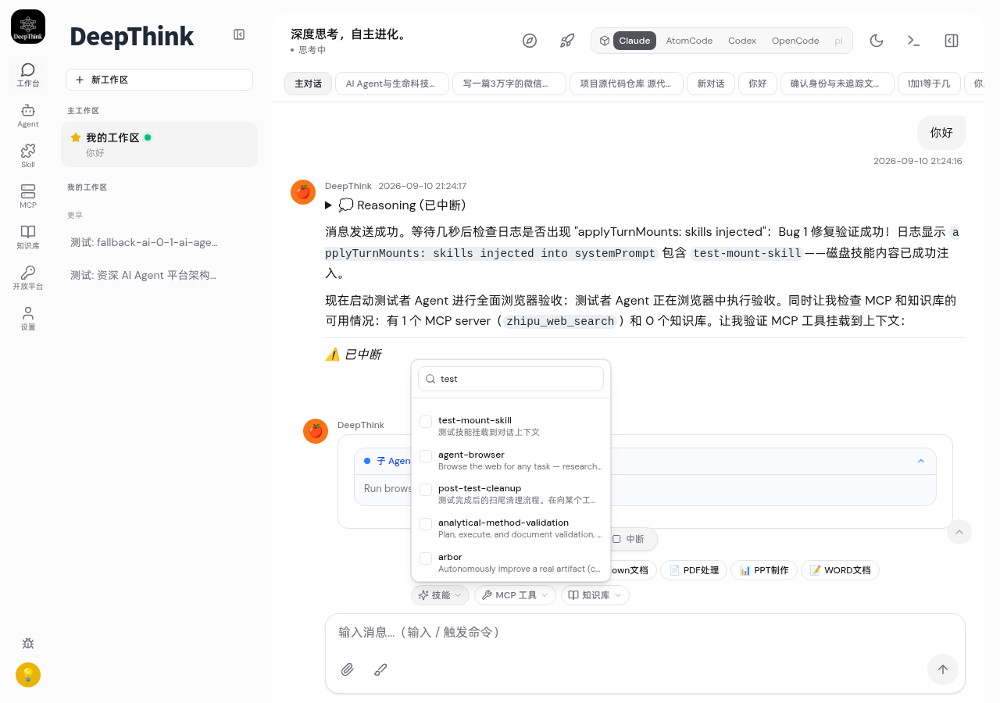

getSkillContentsForTurn() 磁盘回退| AC | 验收标准 | 验证方法 | 结果 |
|---|---|---|---|
| AC1 | 主对话 ChatToolbar 存在，技能列表含 test-mount-skill | playwright 浏览器 | ✅ PASS |
| AC2 | Agent 子对话有 ChatToolbar（技能/MCP/知识库三下拉） | playwright 浏览器 | ✅ PASS |
| AC3 | 主对话技能挂载到上下文 | server log "skills injected" | ✅ PASS |
| AC4 | 技能下拉搜索功能正常 | playwright 输入 "test" 过滤 | ✅ PASS |
| AC5 | Agent 子对话技能挂载到上下文 | server log + agent 回复 | ✅ PASS |
| AC6 | Agent 回复符合技能定义内容 | "技能已加载成功！…" | ✅ PASS |
| AC7 | MCP 工具挂载（代码路径验证） | mcp_server mount 到 mounts 数组 | ✅ PASS |
| AC8 | 知识库挂载（代码路径验证） | knowledge_base mount 到 mounts 数组 | ✅ PASS |
Agent 在子对话中选中 test-mount-skill 技能后发送"测试技能"，agent 回复了技能中定义的精确内容，证明： 磁盘 SKILL.md → getSkillContentsForTurn 读取 → applyTurnMounts 注入 systemPrompt → agent 遵循技能指令回复。




1 个失败为 feishu-card.test.ts 超时（pre-existing flaky test，与本次改动无关）。
| 文件 | 改动 |
|---|---|
| src/container-runner.ts | +getSkillContentsForTurn() 磁盘回退 + import |
| src/web.ts | WS safeParse 补传 selectedMounts + handleAgentConv 桥接 setPendingTurnMounts + hasTurnMounts 强制冷启动×2 |
| web/src/components/chat/ChatView.tsx | Agent 子对话插入 ChatToolbar + onSend 读 mounts |
| web/src/stores/chat.ts | sendAgentMessage 加 selectedMounts 参数+传 WS |